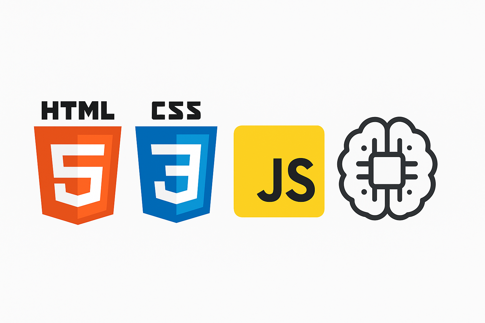

Pedro Henrique
Estudante de tecnologia com foco em desenvolvimento web, apaixonado por programação e design de interfaces. Tenho experiência prática com HTML, CSS e Bootstrap, além de projetos com Grid e Flexbox, sempre buscando construir layouts modernos e responsivos. Sou curioso, gosto de desafios e estou sempre em busca de aprender novas ferramentas, incluindo Tailwind CSS e conceitos de inteligência artificial, para expandir minhas habilidades e me diferenciar no mercado.

code Skills

2022
Projeto de Vídeos
Projeto construído para aplicar inserção de vídeos
Saiba Mais...
Primeiro projeto construído no Curso de HTML5 e CSS3 do CursoemVídeo onde construímos a navegação entre páginas e a incorporação de mídias, principalmente de imagens e vídeos. Um ótimo início para quem estava em seus primeiros passos em HTML e CSS.

2022
Projeto Android
Projeto construído como para aplicar conehcimentos de imagens dinânicas
Saiba Mais...
Você sabia que o sistema Android não foi criado inicialmente para ser usado em celulares? Acompanhe esse projeto para conhecer um pouco mais sobre as curiosidades que envolvem o sistema mais popular para smartphones e aprenda como adaptar mídias a diferentes tamanhos de tela.

2025
Projeto Social
Projeto feito para testar o uso de imagens que rolam e o uso de botões também
Saiba Mais...
Um meta projeto muito interessante deixa o visitante interagir com um aparelho de smartphone que tem seu conteúdo carregado a cada vez que você clica em um ícone de redes sociais. Interatividade e responsividade para um projeto bem elaborado e que utiliza iframes na sua estrutura principal.

2025
Projeto Cordel
Projeto construído para apmpliar domínio em imagens principlamente com efeito paralaxe e dar os primeiros passos na responsividade
Saiba Mais...
Apresentar um conteúdo na tela de forma criativa é sempre um desafio aos desenvolvedores de sites. Nesse projeto, apresentamos um cordel de maneira bem-humorada, responsiva e usando técnicas como parallax para exibição de imagens de fundo.

2025
Projeto Login
Projeto construído para dar importantes passos para o domínio de responsividade, media queries e efeitos suaves de transição
Saiba Mais...
Criar uma tela de login é algo muito comum na vida de quem vai construir sites. Mas essa tela de login deve conter componentes bonitos e com funcionalidades bem definidas e intuitivas de usar. Essa tela de login vai adaptando seus conteúdos usando caixas flexíveis (flexbox) para funcionar em qualquer tamanho de tela.